雲以外の大気現象(Section 3.0) -大気光象および大気電気象-
目次
- 大気光象(Section 3.2.3)
- 大気光象の観測(Section 3.3.4)
- 分類
- ハロ現象（暈現象）(Section 3.2.3.1)
- 22°ハロ（内暈）(Section 3.2.3.1.1)
- 46°ハロ（大暈）(Section 3.2.3.1.2)
- 光柱（ライトピラー）(Section 3.2.3.1.3)
- タンジェントアーク（接暈）(Section 3.2.3.1.4)
- 環天頂アーク(Section 3.2.3.1.5)
- 環水平アーク(Section 3.2.3.1.6)
- 幻日環(Section 3.2.3.1.7)
- サブサン（映日）(Section 3.2.3.1.8)
- 上部ラテラルアーク(Section 3.2.3.1.9)
- 下部ラテラルアーク（または下部側方接暈）(Section 3.2.3.1.10)
- その他のハロ（暈）現象(Section 3.2.3.1.11)
- 46°ハロ（大暈）と上部ラテラルアークの識別上の特徴(Section 3.2.3.1.12)
- 光冠(Section 3.2.3.2)
- 彩雲(Section 3.2.3.3)
- 光輪（グローリー）(Section 3.2.3.4)
- 虹(Section 3.2.3.5)
- ビショップの環(Section 3.2.3.6)
- 蜃気楼(Section 3.2.3.7)
- 陽炎（揺らぎ）(Section 3.2.3.8)
- シンチレーション（星の瞬き）(Section 3.2.3.9)
- グリーンフラッシュ（緑閃光）(Section 3.2.3.10)
- 薄明色(Section 3.2.3.11)
- 大気電気象(Section 3.2.4)
- 分類
- 大気電気象の観測(Section 3.3.5)
- 雷雨(Section 3.2.4.1)
- 雷電（雷光）(Section 3.2.4.1.1)
- 雷鳴(Section 3.2.4.1.2)
- セントエルモの火(Section 3.2.4.2)
- 極光（オーロラ）(Section 3.2.4.3)
大気光象(Section 3.2.3)
大気光象の観測(Section 3.3.4)
重要または例外的な大気光象については、可能であれば写真を添えて詳細な記述を行うべきである。雲に関連する大気光象は、雲の観測とともに記録すべきである。正しい向きの偏光グラスを使用することで、肉眼ではほとんど見えない一部の大気光象を捉えることができる。偏光グラスはまた、肉眼では見逃してしまうような詳細をも明らかにする。
分類
*nse = 記号未制定 (no symbol established)
| 大気現象の名称 | 記号 | 大気現象の名称 | 記号 |
|---|---|---|---|
| 太陽のハロ（日暈） | 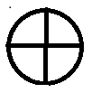 |
ビショップの環 | 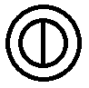 |
| 月のハロ（月暈） | 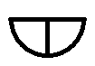 |
蜃気楼 | |
| 太陽の光冠（日輪） | 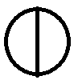 |
陽炎（揺らぎ） | nse |
| 月の光冠（月輪） | シンチレーション（星の瞬き） | nse | |
| 雲の彩雲 | 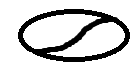 |
グリーンフラッシュ（緑閃光） | nse |
| 光輪（グローリー） | 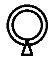 |
薄明色 | nse |
| 虹 | 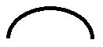 |
薄明光線 | nse |
| 霧虹 | 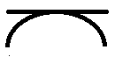 |
ハロ現象（暈現象）(Section 3.2.3.1)
定義: ハロ現象（暈現象）: 大気中に浮遊する氷晶（巻雲系の雲、細氷など）による光の屈折または反射によって生じる、環、弧、柱、または輝点などの形態をとる一連の光学現象。

複雑なハロ（暈）のディスプレイ
この壮大なハロ（暈）のディスプレイは、チェコ共和国エルツ山地のクリーノヴェツ山、ネクリードにおける標高1,100 mの細氷を通した太陽光の屈折と反射によって形成された。
このような複雑なディスプレイは通常、極域でのみ観測されるが、今回のように空気中に氷晶が存在する場合、山岳地帯でも時折発生することがある。この写真にある埃のような斑点は、実際には太陽の光を浴びてきらめく細氷の氷晶である。
この写真で見られるハロは以下の通りである：22°ハロ（内暈）、幻日環および幻日、下部タンジェントアーク、下部ラテラルアーク、サンケイブ・パリーアークを伴う上部タンジェントアーク、ヘリアックアーク、環天頂アークに接する上部ラテラルアーク、および4つのテープアーク（46°パリーアークとも呼ばれる）。
これらのハロの種類のいくつかは、22°ハロや幻日などのように極めて一般的である。しかし、その他のものはあまり見られず、ヘリアックアークやテープアークなどの一部は、目撃されることが稀である。
太陽光の屈折によって形成されるハロの種類は色づいて見えることがあるが、反射によるハロは白色である。夜間は人間の目で色を知覚することが困難であるため、月のハロ（月暈）はほとんど白色に見える。
22°ハロ（内暈）(Section 3.2.3.1.1)
22°ハロ（以前は小暈として知られていた）は、最も頻繁に観測されるハロ現象である。小暈は、光源（太陽または月）を中心とした半径22°の白色または大部分が白色の光の輪として現れる。内側には赤い縁取りが見られ、稀なケースでは外側に紫色の縁取りが見られる。輪の内側の空は、それ以外の空よりも著しく暗い。ハロは空のどの位置にあっても、常に半径22°である。巻雲系の雲の量によっては、完全な円の一部しか見えないこともある。半径の確認は、腕を伸ばして指を広げたときの親指と小指の間の角度が約20°であるという知識を用いて、手を使って行うことができる。つまり、親指を太陽の上に重ねると、小指の先端付近に22°ハロが見つかる。

巻層雲 霧状雲と22°ハロ
この写真は、西（写真の右側）から侵入してくる巻層雲の薄いベールを示している。形や細かな特徴を欠いていることから、種は霧状雲（nebulosus）と特定される。少量の高積雲も見える。主な特徴は、ランダムに配置された多数の氷晶を太陽光線が通過することによって生じた、中程度の強度の完全な22°の太陽のハロ（日暈）である。
46°ハロ（大暈）(Section 3.2.3.1.2)
46°ハロ（以前は大暈として知られていた）は、半径46°の円形のハロであり、時折観測される。このハロは22°ハロよりもはるかに稀であり、常に暗い。46°ハロは上部ラテラルアークと混同されやすい。識別上の特徴については表22を参照のこと。

ハロ（暈）のディスプレイ
このハロのディスプレイは、ドイツのバイエルン・アルプスにあるツークシュピッツェ山（標高2,963 m）における細氷を通した太陽光の屈折と反射によって形成された。細氷とは、非常に小さな氷晶として快晴の空から降る降水であり、多くの場合、非常に小さいために空中に浮遊しているように見える。これらの氷晶は主に、太陽の光を浴びてきらめく時に見える。
この写真で見られるハロの種類は以下の通りである：22°ハロ、幻日環、1と2に見られる幻日、上部タンジェントアーク、上部サンピラー（太陽柱）、下部サンピラー、46°ハロ、下部ラテラルアーク、上部ラテラルアーク。
これらのハロの種類のいくつかは、22°ハロや幻日などのように極めて一般的であるが、その他のものはあまり見られない。比較的明るい斑点や弧として現れるものもあれば、かすかで識別が困難なものもある。
光柱（ライトピラー）(Section 3.2.3.1.3)
ライトピラー（光柱）とも呼ばれる、途切れたり連続したりした光の筋として現れる白色の光柱が、太陽や月などの光源の垂直上下に観測されることがある。光柱は時折、地上の光源の上に観測されることもあり、ごく稀に、金星などの明るい惑星の上下に延びる小さな光柱が見られることがある。光源が太陽である場合、この現象はサンピラー（太陽柱）として知られている。光源より上の柱を上部ピラー、光源より下の柱を下部ピラーという。下部ピラーは、下に氷の雲、着氷性霧、または細氷などの氷晶が存在する場合に、丘や山、あるいは航空機から最もよく見える。

サンピラー（太陽柱）
ジャージー島のジャージー空港で撮影されたこの写真は、日の出の瞬間のサンピラー（太陽柱）を示している。このサンピラーは巻層雲の存在を示しており、板状の氷晶による太陽光の反射によって形成される。この巻層雲は非常に薄く、明確な細かな特徴がなく無特徴であるため、種は霧状雲（nebulosus）である。空には、少量の小さな巻雲の塊も存在する。報告によると、サンピラーは英国のイングランド南部やフランス北部からも観測された。滑走路上には、小さな浅い霧（地霧）の塊が見える。
タンジェントアーク（接暈）(Section 3.2.3.1.4)
これは、他のハロ（暈）に接して形成されるいくつかの種類の光の弧の総称である。タンジェントアークは、22°ハロまたは46°ハロの外側に見られることがある。これらの弧は、円形のハロの最も高い点または最も低い点で接する（それぞれ上部タンジェントアークおよび下部タンジェントアーク）。弧は、光源（太陽または月）の仰角によって変化する形態を持つ。それらはしばしば短く、単なる輝点として現れることすらある。光源が地平線のすぐ上にある場合、上部タンジェントアークは狭いV字型として現れる。太陽や月が空高く昇るにつれて、上部タンジェントアークのV字型は開き、大きな鳥が翼を広げたような形になる。
22°ハロの場合、太陽または月が地平線から22°以内にあるとき、下部タンジェントアークは通常地平線の下にあるため、山の上（細氷の中）や航空機から（より厚い巻雲の中）など、高い場所からしか見ることができない。もし見える場合、下部タンジェントアークの逆V字型は、光源の仰角が上がるにつれて狭くなり、その後広がる。
太陽や月が地平線上32°に達すると、上部と下部のタンジェントアークが繋がり、外接ハロと呼ばれるものを形成する。このほぼ楕円形のハロは22°ハロの外側にあり、最も高い点と最も低い点でそれに接している。時折、より明るい上部と下部のみが実際に見えることがある。太陽や月が約50°より高く昇ると、@@および外接ハロは徐々に円形になり、さらに仰角が高くなると22°ハロと融合するため、それらを区別することが困難になる場合がある。しかしながら、外接ハロは一般に22°ハロより明るく、より純粋な色をしており、最も内側の色が赤である。

22°ハロと上部タンジェントアーク
「タンジェントアーク」とは、他のハロに接して形成されるいくつかの種類の光の弧の総称である。この写真では、タンジェントアークが22°ハロの最も高い点で接しているため、上部タンジェントアークである。
タンジェントアークは、光源（太陽または月）の仰角によって変化する形態を持つ。光源が地平線のすぐ上にある場合、上部タンジェントアークは狭いV字型をとる。太陽や月が空高く昇るにつれて、上部タンジェントアークのV字型は開き、大きな鳥が翼を広げたような形になる。
環天頂アーク(Section 3.2.3.1.5)
環天頂アーク（以前は上部環天頂アークとして知られていた）は、天頂付近にある色彩豊かな半円で、太陽の約48°上に頂点を持つ。それは明るい色をしており、弧の下側（外側）が赤、上側（内側）が紫である。このアークは、光源（例えば太陽）の仰角が32°未満のときにのみ発生する。この太陽仰角において、アークは最も小さな半径を持つ。半径が減少することで、アークは着実に拡大する。光源の仰角が約22°のとき、環天頂アークは（見えていれば）46°ハロに接する。これら2つの特徴は、光源が22°から遠ざかるにつれて、ますます離れていく。アークは、46°ハロが同時に存在していなくても見えることがある。幻日が存在する場合、環天頂アークが見える確率は高く、特に太陽仰角が15°から25°の間でその傾向が強い。これは、どちらも水平に配向した板状の氷晶によって引き起こされるためである。

環天頂アーク
この鮮やかに色づいた環天頂アークは、巻雲 毛状雲の氷晶を通した太陽光の屈折によって形成された。環天頂アークは、光源（例えば太陽）が地平線上32°未満の仰角にあるときにのみ発生するハロ現象である。
アークは天頂（観測者の真上の空の点）を中心としているため、空の高い位置に観測される。この写真に示されているように、通常は明るいスペクトル色を示す。際立った特徴は、赤が常にアークの下側（外側）にあり、紫が常に上側（内側）にあることである。
環天頂アークの正確な位置、長さ、および明るさはすべて、太陽の仰角によって変化する。仰角が約22°のとき、アークは（見えていれば）大暈（46°ハロ）に接する。しかしながら、多くの場合、大暈は見られない（この事例のように）。
環水平アーク(Section 3.2.3.1.6)
環水平アーク（以前は下部環天頂アークとして知られていた）は、地平線付近のアークであり、地平線と平行に広がる。環水平アークは、環天頂アークと同じくらい色彩豊かで明るい。環水平アークは、光源の仰角が58°以上のときにのみ発生する。太陽が約68°の仰角に達すると、環水平アークは最大強度に達する。緯度55°より北または南の国々では、太陽が常に58°より低いため、環水平アークを見ることはできない。したがって、これは地球上のどこでも見られるわけではない数少ないハロの1つである。光源の仰角が約68°のとき、環水平アークは（見えていれば）46°ハロの下部に接する。これら2種類のハロは、光源が46°から遠ざかるにつれて、ますます離れていく。アークは、46°ハロが見えていなくても見えることがある。

環水平アーク
環水平アークは、空の低い位置、地平線近くに発生する、かなり平坦なスペクトル色のアークである。これは巻雲などの上層雲にある氷晶を通した太陽光の屈折によって形成されるが、光源（例えば太陽）の仰角が58°より大きいときにのみ発生する。赤が常に最も上にあり、スペクトルの紫色の部分が地平線に最も近くなる。
幻日環(Section 3.2.3.1.7)
これは、太陽と同じ仰角にある白色の水平な円である。幻日環の特定のポイントに輝点が観測されることがある。これらの斑点は最も一般的に、22°ハロの少し外側に発生する（幻日、多くの場合鮮やかに色づいている）。時折、太陽から方位角で120°離れた位置に輝点（120°幻日）が見られ、ごく稀に太陽の反対側（対日）に見られることがある。幻日、120°幻日、または対日が特に明るい場合、それらはしばしばモックサン（偽日）と呼ばれる。
月によって生じる対応する現象は、幻月環、幻月、120°幻月、および対月と呼ばれる。幻月、120°幻月、または対月が特に明るい場合、それらは時折モックムーン（偽月）と呼ばれる。幻日および幻月は、斜めに配向したローウィッツアークによって22°ハロと接続されることがある。ローウィッツアークは、22°ハロの外側に発生する比較的稀なハロのグループである。これらは太陽の仰角が高いときにのみ見られる。
サブサン（映日）(Section 3.2.3.1.8)
これは、雲の中の板状の氷晶における太陽光の反射によって生じる。穏やかな水面に映る太陽の像に似て、太陽の垂直下方に輝く白い斑点として現れる。サブサンは下を見下ろしたときにしか見えないため、航空機から（巻層雲の中に）、または冬の山岳地帯（細氷の中に）からしか観測されない。

サブサン（映日）
サブサン（映日）は、雲の中の氷晶における太陽光の直接反射によって生じるハロ現象である。
サブサンは下を見下ろしたときにしか見えず、航空機または山からしか観測されない。穏やかな水面に見える太陽の像に似て、太陽の垂直下方に輝く白い斑点として現れる。
この写真の中央にある明るいサブサンは、英国上空の巻雲の上を飛ぶ航空機から観測されたものである。英国の南西には低気圧があり、国の南部には寒冷前線があった。
サブサンを生じさせる氷晶は通常、水平に配向した大きな六角板である。このハロはほぼ円形の輝点になり得るが、板状の氷晶の水平からの揺れや傾きが大きくなるにつれて、または太陽の仰角が低い場合には、より細長くあるいは楕円形になる。
上部ラテラルアーク(Section 3.2.3.1.9)
これは虹色の大きな弧であり、光源の仰角が32°未満の場合にのみ形成される。それは大きな円の断片として現れ、常に幻日環の仰角よりも上に位置する。上部ラテラルアークは46°ハロ（大暈）と間違われることがあるが、上部ラテラルアークの方がより明るく、色づいて見えることによって区別できる。大きな46°ハロとは対照的に、上部ラテラルアークの形状は光源の仰角によって変化する。弧の頂点は環天頂アークの近くにあるか、あるいはそれに接している。上部ラテラルアークは46°ハロと混同されやすい。識別上の特徴については表22を参照のこと。
下部ラテラルアーク（または下部側方接暈）(Section 3.2.3.1.10)
これは46°ハロのすぐ外側に接する稀な一対の色づいた弧であり、常に幻日環の高さより下に見られる。形状は光源の仰角に伴って変化する。太陽の仰角が高くなるにつれて、46°ハロにおける接点は46°ハロに沿って下方に移動する。その後、下部ラテラルアークは共通の弧を形成する。太陽仰角が68°のとき、この弧は太陽の垂直下方の46°ハロに接する。太陽がさらに高くなると、弧の頂点は46°ハロの数度下に位置するようになる。下部ラテラルアークは、環天頂アークと同じくらい明るく色彩豊かになることがある。
その他のハロ（暈）現象(Section 3.2.3.1.11)
ごく稀に、その他の多数のハロ現象が見られることがある。これらには、パリーアーク、対日アーク（ディフューズ、ウェゲナー、ヘイスティングス、トリッカー）、テープアーク（または46°パリーアーク）、ヘリックアーク、サブヘリックアーク、モイラネンアーク、ピラミッド型氷晶によるハロ（例えば、半径9°、18°、20°、23°、24°、35°のもの）、および同様に多数のタンジェントアークやパロイドアーク、楕円ハロなどが含まれる。
46°ハロ（大暈）と上部ラテラルアークの識別上の特徴(Section 3.2.3.1.12)
表22. 46°ハロ（大暈）と上部ラテラルアークの識別上の特徴
| 見えるハロ | 46°ハロ | 上部ラテラルアーク | 46°ハロおよび上部ラテラルアーク |
|---|---|---|---|
| 共通の特性 これらの特徴は通常、46°領域のハロを特定するのに適している。もしこれらの特性でハロを正確に決定できない場合は、対応する太陽仰角の基準も確認すること |
- ハロの色づきは乏しい（多くの場合、赤、オレンジ、白のみが見える） - 22°ハロに接するタンジェントアークが見えないか、22°ハロよりも著しく暗い - 下部ラテラルアークが見えない |
- ハロは色彩豊かである（青や緑も見える） - タンジェントアークは見えているが、22°ハロは見えないか、22°ハロがタンジェントアークよりも非常に暗い - 上部ラテラルアークは常に環天頂アークに接する（太陽仰角が15°から27°の間では、46°ハロも環天頂アークに接することに留意） - 下部ラテラルアークが見える |
- 22°ハロとタンジェントアークの明るさが似ているか、両方ともよく認識できる - 46°領域のハロには、色彩豊かな部分と無色の部分、あるいは明るい部分と暗い部分という著しく異なる2つのセクションがある - 良いディスプレイでは両方のハロが同時に現れる - 下部ラテラルアークが見えることがある |
| 太陽仰角15°未満 上部ラテラルアークは46°ハロの側面に接する。太陽が地平線に近い場合、コンタクトアークは太陽と同じ仰角にある |
- 46°ハロと環天頂アークの間に隙間がある - ハロの上部のみが見える |
- ハロは両側でのみ見えるが、対称的である | - 46°ハロの両側に非常に色彩豊かな、あるいは明るいセクションがある |
| 太陽仰角15°～27° 両方のハロが重なるため、結果の識別が困難である |
- 環天頂アークに接する | - 環天頂アークに接する | - ハロは互いに非常に似ている。共通の特性も使用すること |
| 太陽仰角27°～32° ハロ同士は接しない |
- 46°ハロと環天頂アークの間に隙間がある | - 太陽からの距離が46°を超える | - 46°ハロの上に明るく色彩豊かなハロのセクションがある - 2つの別々のハロを明確に区別できる |
| 太陽仰角32°超 太陽仰角が32°を超える場合、上部ラテラルアークは存在しない |
- 46°領域のハロは常に46°ハロである | - 起こり得ない | - 起こり得ない |
光冠(Section 3.2.3.2)
定義: 光冠: 太陽または月を中心とした、小直径の色づいた環の1つまたは複数の連続（3つを超えることは稀である）。
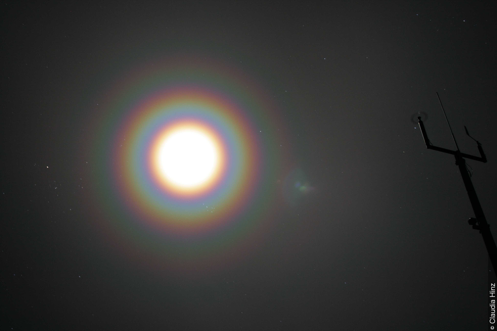
光冠
光冠は、太陽または月を中心とした小直径の色づいた環の1つまたは複数の連続である。これは、もや、霧、または非常に小さな水滴や氷の粒子で構成される薄い雲を通過する光の回折によって引き起こされる。
ドイツのバイエルン・アルプスにあるヴェンデルシュタイン山（1,835 m）から撮影されたこの写真は、山頂付近に形成された薄い地形性の雲を月の光が通過する際の回折によって形成された月の光冠（月輪）を示している。月の周りの光冠の中心部分は極めて明るく、オーレオール（光環）と呼ばれる明確な赤褐色の縁がある。これを取り囲むように色づいた環がある。各連続帯において、内側は紫または青、外側は赤であり、その中間に緑や黄色などの他の色が現れる。
各連続帯において、内側の環は紫または青、外側の環は赤であり、その中間に緑や黄色などの他の色が現れることがある。通常は直径5°以下の最も内側の連続帯は、一般的に中心部が強烈に明るく、「オーレオール（光環）」と呼ばれる明確な赤みがかったまたは栗色の外側の環を持つ。
光冠は、光源（太陽または月）からの光が、もや、霧、または非常に小さな水や氷の粒子で構成される薄い雲を通過する際の回折によって引き起こされる。光冠は、空気中の大量の花粉によって光が回折される場合にも発生することがある。オーレオールおよびそれに続くほぼ等間隔の赤い環の半径は、粒子が小さいほど大きくなる。粒子の大きさが均一でない場合、光冠で観測される色は、虹の色よりも純度が低く、色数も少なくなる。
時折、雲の様々な部分における粒子の大きさの違いにより、雲の中に見える光冠が歪んで見えることがある。月の周りでも、満月の時を除いて月は対称的な光源ではないため、小さな半径の歪んだ光冠が観測されることがある。光冠は直径が最大15°になることがあり、異なる雲が太陽や月を横切るにつれて縮んだり膨らんだりすることがある。
彩雲(Section 3.2.3.3)
定義: 彩雲: 雲に現れる色であり、混ざり合っていることもあれば、雲の縁にほぼ平行な帯の形になっていることもある。緑とピンクが最も頻繁に、パステル調の色合いで現れる。

彩雲
虹色の色彩がこの雲層の大部分を覆っている。これは彩雲として知られている。
この雲は非常に高い高積雲であり、巻積雲とほぼ境界を接していると特定される。層が比較的広範囲に及んでいるため、種は層状雲（stratiformis）である。また、薄く半透明（変種 半透明雲 translucidus）であり、うねりがある（変種 波状雲 undulatus）。
彩雲は、太陽光と小さく均一な大きさの雲粒子との相互作用によって生じる。太陽から約10°以内では、回折が彩雲の主な原因である。約10°を超えると、通常は光波の干渉が支配的な要因となる。
青などの他の色も見られるが、緑とピンクの色が優勢になる傾向がある。それらはしばしば繊細なパステル調の色合いであるが、鮮やかになることもある。
光輪（グローリー）(Section 3.2.3.4)
定義: 光輪（グローリー）: 主として無数の小さな水滴からなる雲、霧、あるいはごく稀に露の上に、観測者が自身の影の周りに見る、1つまたは複数の色づいた環の連続。

光輪（グローリー）とブロッケン現象
光輪（グローリー）は、小さな水滴で構成される雲や霧の上に、観測者自身の影の周りに見られる1つまたは複数の色づいた環の連続である。これは、小さな水滴内での太陽光の屈折、反射、および回折の結果として発生する。
この現象は太陽の正反対、対日点を中心としてのみ発生する。したがって通常は地平線の下にあり、ドイツのバイエルン・アルプスにあるヴェンデルシュタイン山（1,838 m）からのこの写真のように、高い場所から低い雲を見下ろしたときに一般的に観測される。
低い雲や霧が観測者の近くにある場合、遠近法により観測者の影は非常に大きく歪んで見える。これはブロッケン現象と呼ばれる。
虹(Section 3.2.3.5)
定義: 虹: 大気中の水滴（雨滴、または霧雨や霧の小水滴）の「スクリーン」上に、太陽または月からの光によって生じる、紫から赤までの範囲の色を持つ同心円状の弧の群。

過剰虹を伴う主虹
この写真の主虹の内側には、一連の追加の、すなわち過剰虹がある。これらのオレンジ、緑、紫色の細い帯は、光波の干渉によるものである。
また、主虹の外側の領域が、虹の内側の領域よりも著しく暗いことも見て取れる。空のこの暗い領域は、アレキサンダーの暗帯として知られている。
主虹(Section 3.2.3.5.1)
これは、明るい光源（太陽または月）からの光が水滴の「スクリーン」に当たったときに現れる、色づいた弓または弧である。雨滴の厚い「スクリーン」は、水滴が少ない薄いカーテンよりも鮮やかな色を生み出す。水滴のスクリーンが弧の一部にしか存在しない場合、虹の断片のみが見える。
水滴または小水滴の大きさによって、どの色が存在するか、およびそれぞれが占める帯の幅が決定される。いわゆる「虹の色」（赤、オレンジ、黄、緑、青、藍、紫）のすべてを区別できることは稀である。太陽が地平線に近い場合、塵（ダスト）によって赤い虹が生じることがある。これは、エアロゾルがより波長の短い青や緑の光を選択的に散乱させるために起こる。
虹は光源（太陽または月）の反対側の空の一部に見られ、その弧は常に、観測者から見て光源の正反対にある点（すなわち、光源から観測者を通って、通常は地面へと延びる直線の延長線上）を中心としている。この点は、光源が太陽の場合は対日点、光源が月の場合は対月点として知られている。すべての場合において、紫が内側（弧の半径は40°）、赤が外側（半径は42°）である。虹の外側の空は内側よりも暗く、この現象はアレキサンダーの暗帯として知られている。
観測者に見える弧の量もまた、光源の仰角に依存する。日の出または日の入り（月の出または月の入り）に近い平坦な地形の上では、主虹はほぼ半円になることがある。太陽または月が昇って仰角が高くなるにつれて、弧の中心、すなわち主虹の中心は地平線の下に下がる。光源の仰角が40°に近づくと、主虹（半径42°）の弧はほぼ地平線上に乗り、虹の頂部のみが空に見えるようになる。太陽または月が42°より高く昇ると、主虹は地平線の下に隠れる。
丘などの高い見晴らしの良い場所からは、観測者は半円より大きな虹の弧を見ることができる。航空機などの非常に高い見晴らしの良い場所からは、円の大部分を形成する虹、あるいは完全な環状の虹が見えることがある。
極めて稀な状況（異なる大きさの雨滴が混在する場合）では、主虹が2つの同等の虹に分裂しているように見え、「双子虹（twinned bow rainbow）」となる。この内側の虹は、過剰虹には全く似ていない。

主虹
スペクトルの色を示すこの主虹は、ドイツのバイエルン・アルプスにあるヴェンデルシュタイン山でのにわか雨（しゅう雨）の最中に見られた。水滴が少ない場合よりも、雨滴の厚い「スクリーン」がある場合の方が、色はより鮮やかになる。赤は常に主虹の外側にある。
副虹(Section 3.2.3.5.2)
これは主虹に加えて発生することがある。副虹は主虹よりもはるかに明るさが劣り、ほぼ2倍の幅を持つ。色は反転しており、内側が赤（弧の半径は51°）、外側が紫（半径は54°）である。主虹の見え方に関する上記の議論は副虹にも同様に当てはまるが、この場合の仰角は副虹に適用されるものである。

低仰角の虹
虹は光源（この場合は太陽）の反対側の空の一部に見られる。虹の弧は常に、観測者から見て太陽の正反対にある点（対日点と呼ばれる）を中心としている。したがって、観測者の背後の空高くに太陽が位置している場合、この例における対日点は写真の底辺より下に位置する。この理由から、太陽が空の高い仰角にあるとき、虹の弧は低い仰角に現れる。
イン川の谷を見渡すドイツのブランネンブルクからのこの写真は、過剰虹を伴う主虹を示している。主虹の外側の空は内側よりも暗く、これはアレキサンダーの暗帯として知られる現象である。空のより高い位置には副虹がある。副虹の色の順序は常に主虹の逆の順序であり、副虹は主虹よりも暗いことに留意されたい。
過剰虹(Section 3.2.3.5.3)
これらは、光波の干渉による細い色づいた弧（緑、紫、またはオレンジ）に縁取られた虹である。それらは主虹の内側、または稀に副虹の外側に発生する。雨滴が大きい（直径1 mmを超える）場合、回折パターンは最大5つの過剰虹を持つことがあり、最初のものは主虹と融合し、すべてが鮮やかな色のパターンを繰り返す。水滴が小さい場合、形成される過剰虹の数は少なくなる。
霧虹(Section 3.2.3.5.4)
これは、非常に小さな水滴内での太陽光または月光の屈折と反射、およびわずかな回折によって生じる主虹である。それは霧やもやの「スクリーン」上に現れる。霧虹は白い帯で構成され、通常は外側をかすかな細い赤い帯、内側をかすかな細い青い帯で縁取られている。霧虹は、雲虹（cloudbow）、もや虹（mistbow）、または白虹（white rainbow）として知られることもある。

霧虹
地表での放射冷却を伴う晴れた夜により、夜明けまでに霧の領域が発達した。霧堤の厚さが薄く、太陽光線が透過できる場所では、写真家の背後に太陽が昇るにつれて霧虹が形成された。
霧虹は主虹であり、虹とほぼ同じ方法、すなわち水滴内での太陽光（または月光）の屈折と反射によって形成される。もやや霧の中の水滴が非常に小さい結果として、もやや霧の「スクリーン」上に白い帯または弧として現れる。
霧虹は、雲虹、もや虹、または白虹としても知られている。
反射虹(Section 3.2.3.5.5)
滑らかな水面（湖、または時折見られる穏やかな海や穏やかな沿岸水域など）からの太陽光の反射は、反射された太陽光を上方へ送る。反射された太陽光は、主虹および副虹の「反射虹」の光源として機能する可能性がある。
反射された太陽光の光源は通常、観測者の背後にある滑らかな水域であるが、前方にある場合もあり、その場合は反射虹の基部のみが見える。
反射虹の弧は、太陽の正反対で、かつ同じ仰角（対日点）を中心としている。これは、通常の虹の中心が地平線より下にあるのと同じ、地平線より上の仰角である。反射虹は対応する通常の虹よりも空の急な角度で現れ、それらは地平線で交差する。
反射された虹（鏡像虹）(Section 3.2.3.5.6)
雨滴を通過した後に滑らかな水面によって反射された太陽光は、主虹および副虹の反射された虹（鏡像虹）を形成することがある。反射により虹は反転して地平線の下に見え、弧の中心は地平線上の対日点に位置する。反射された虹は真の意味での反射（鏡像）ではなく、異なる雨滴によって形成される。

反射虹と反射された虹（鏡像虹）
2011年12月18日13時00分頃、英国スコットランドのルイス島にあるナ・ヒヴニ・ルアイ湖（Loch na h-Aibhne Ruaidhe）で撮影されたこの写真には、稀な多重虹が見られる。
元の画像は左側にあり、右側はコントラストと彩度を高めたデジタル補正版である。補正された画像ではよりかすかな虹がより明確に見え、合計7つの虹を見ることができる。
虹は以下の通りである：主虹、副虹、反射主虹、反射された主虹（鏡像主虹）、反射された副虹（鏡像副虹）、反射された反射主虹、および非常にかすかな反射された反射副虹。
雨滴に達する前に滑らかなロッホ（湖）の表面から上方へ反射された太陽光が、反射虹の原因であった。湖は部分的に凍結しており、氷の上に薄い水の層があるだけであった。これにより、軽度から中程度の微風があったにもかかわらず、湖面に波が形成されるのが防がれた。
反射された虹（鏡像虹）は、太陽光が雨滴を通過した後に湖から反射された太陽光によって生成された。この反射により虹は反転し、虹の中心は地平線より上になる。
反射された反射虹は、太陽光が水面から上方へ反射されて雨滴と出会い、その結果生じた虹の光線が水面で反射して観測者に届くことによって形成された。
しぶき虹（シースプレーボウ）(Section 3.2.3.5.7)

しぶき虹（シースプレーボウ）
このしぶき虹（「虹」の一種）は、米国カリフォルニア州の海岸で砕ける波から風によって吹き飛ばされた水滴によって作られた、しぶきの「スクリーン」内における太陽光の屈折と反射の結果として発生した。
ビショップの環(Section 3.2.3.6)
定義: ビショップの環: 太陽または月を中心とした白っぽい環で、内側はわずかに青みがかり、外側は赤褐色をしている。
ビショップの環は、高層大気中の非常に細かい火山塵の雲を光が通過する際の回折によって引き起こされる。環の内縁の半径は通常22°から28°の間であり、環の幅はさらに10°以上ある。正確な寸法は塵の粒子の大きさによって決まる。ビショップの環の色はあまりはっきりしない。特に月の周りで観測される環では色が薄く、通常は淡い赤い縁取りだけが見える。ビショップの環は、1883年のクラカトア火山の噴火後にこの現象を初めて記述したS・ビショップ牧師にちなんで名付けられた。
蜃気楼(Section 3.2.3.7)
定義: 蜃気楼: 主に遠くの物体の像からなる光学現象。これらは、安定しているか揺らめいているか、単一か複数か、正立か倒立か、垂直方向に拡大されているか縮小されているか、様々である。

海氷の上位蜃気楼
蜃気楼は、主に遠くの物体の像からなる光学現象である。これらは、安定しているか揺らめいているか、単一か複数か、正立か倒立か、垂直方向に拡大されているか縮小されているか、様々である。これらは、温度の違い、したがって密度の違いにより屈折率が変化している空気の層を光線が通過する際に曲げられる結果として生じる。したがって、これらは地表の温度が上空の空気の温度と大きく異なる場合に観測される。
蜃気楼は、激しく加熱された水面、土壌、砂浜、道路などの上の下位蜃気楼（inferior mirage）として、または雪原、冷たい水、氷などの冷たい表面の上の上位蜃気楼（superior mirage）として発生することがある。
この写真は、冷たい海面上における海氷の上位蜃気楼を示している。暖かく密度の低い空気が、海面の冷たく密度の高い空気の上に重なっている。「上位 (upper)」や「superior」という用語が名前に当てはめられているのは、この種の蜃気楼では、物体からの光が観測者に向かって下方に曲げられ、物体が本来の位置よりも高く見えるようになるためである。
陽炎（揺らぎ）(Section 3.2.3.8)
定義: 陽炎（揺らぎ）: 水平方向を見たときの、地表の物体の見かけ上の揺らめき。
下位蜃気楼と陽炎（揺らぎ）
地中海のキプロス島にあるアクロティリ半島から朝日が昇るにつれ、地面が加熱されて地表に強い垂直温度勾配が生じた。かなりズームされたこの望遠の画像は、加熱された砂地の上に生じた蜃気楼と陽炎（揺らぎ）の両方の光学効果を示している。
陽炎（揺らぎ）とは、水平方向を見たときの地表の物体の見かけ上の揺らめきである。これは主に太陽が明るく照っているときの陸上で発生し、大気の表面層における屈折率の短周期の変動によるものである。写真を拡大すると、背景の物体がわずかに歪んで見える（例えば1と2の部分）。
蜃気楼は、光が温度や密度の異なる空気の層を通過することによって屈折する（曲げられる）際に生じる光学現象である。ここに示す蜃気楼の種類は下位蜃気楼である。「下位 (inferior)」という用語は、蜃気楼の像が実際の物体よりも低く見えるという事実を指している。空やその他の物体からの光線は観測者に向かって上方に曲げられ、そのため空がまるで地面にある水のように見える。車や植生などの地上の物体の蜃気楼の像は、実際の物体の下に逆さまの鏡像として現れる。
陽炎（揺らぎ）は主に、地表が熱いとき、通常は太陽が明るく照っているときに陸上で発生する。これは、小さな空気の塊の動きの結果として、大気の表面層における屈折率の短周期の変動によって引き起こされる。陽炎（揺らぎ）は視程を著しく低下させることがある。
シンチレーション（星の瞬き）(Section 3.2.3.9)
定義: シンチレーション（星の瞬き）: 星や地上の光源からの光の、しばしば脈動の形をとる急速な変化。
星や光の見かけの明るさ、色、位置は、光線が通過する大気の一部分における屈折率の変動のために変化（「瞬き」）する。この現象は陽炎（揺らぎ）に類似している。
他の要因が同じであれば、光が大気中を通過する経路が長いほど、シンチレーションはより顕著になる。したがって、星のシンチレーション、または「瞬き」は、天頂よりも地平線近くでより顕著になる。
グリーンフラッシュ（緑閃光）(Section 3.2.3.10)
定義: グリーンフラッシュ（緑閃光）: 太陽、月、または時には惑星が地平線の下に沈むか地平線の上に現れるときに、その極端な上縁に見られる、しばしば閃光の形をとる短時間の主に緑色の着色。
.jpeg)
グリーンフラッシュ（下位蜃気楼の閃光）
下位蜃気楼の閃光はグリーンフラッシュの一種であり、沈む太陽の最後の光、あるいは昇る太陽の最初の光として現れる。この写真では、米国カリフォルニア州サンフランシスコからの日没時に、太平洋上にグリーンフラッシュが見られる。
この種のグリーンフラッシュは、地表の空気層がその上の空気よりも著しく暖かい場合に発生する。海面に近い場所から見るのが最適である。
数度の高度までの閃光が観測されることが時折ある。この現象の色は主に緑色であるが、空気が非常に透明な場合はごく稀に青や紫が見えることもある。この現象は、地平線がはっきりと見える場合にのみ見ることができる。陸上よりも海上でより頻繁に観測される。
主に2つのタイプのグリーンフラッシュがあり、それぞれ約1〜2秒間続く。
(a) 下位蜃気楼の閃光: これは沈む太陽の最後の光、あるいは昇る太陽の最初の光として発生することがある。地表の空気層がその上の空気よりも著しく暖かい場合に発生することがあり、海面に近い場所から見るのが最適である。
(b) 擬似蜃気楼の閃光: これは、太陽が実際に沈む直前、または昇った直後に、太陽の上縁から分離した領域として発生する。これは、暖かい空気が冷たい地表の空気の上にあり、観測者が気温逆転層の上から見ている場合に発生する。
その他にも、非常に稀な種類のグリーンフラッシュが知られている。これらには、砂時計の形をした太陽の上部が最大15秒間緑色に変わるサブダクトフラッシュや、光の筋がグリーンフラッシュから上方へ延びるか、日没直後に見られるグリーンレイ（緑の光線）が含まれる。ごく稀に、太陽が山や地平線付近の雲堤の上縁、または沿岸霧の背後に隠れるときにグリーンフラッシュが観測されることがある。
薄明色(Section 3.2.3.11)
定義: 薄明色: 日没時および日の出時における、空と山頂の様々な着色。

地球の影
日没後の夕暮れ（薄明）時に撮影されたこのパノラマ写真は、太陽の反対側の地平線上の大気に投影された地球の影を示している。その影ははっきりとした青灰色をしており、太陽が反対側の地平線の下へさらに沈むにつれて地平線の上に昇っていく。影の上縁を縁取るバラ色から紫色のリボンは反薄明弧であり、「ビーナスの帯」としても知られている。このパノラマの視野は写真の左右の端にある太陽側の地平線まで及んでいるため、3と4に薄明弧を見ることができる。
紫光（パープルライト）(Section 3.2.3.11.1)
太陽の方向には、紫光と呼ばれる輝きが時折見られる。これは大きな発光円盤の断片（弓形）として現れ、地平線から上方へ広がる。紫光は徐々に昇り、太陽が地平線下3°または4°のときに大きさも輝度も最大に達する。その後それは降下し、太陽が地平線下約6°のとき（常用薄明の終わりに）消失する。時折、この最初の紫光が消失した後に、現象がより弱い強度で繰り返されることがある。2番目の紫光のパッチは最初よりもわずかに低い仰角に現れるが、それ以外は同じ順序をたどる。

紫光（パープルライト）
薄明色は、大気中における太陽からの光線の屈折、散乱、または選択吸収によって生じる。これらは、日没後または日の出前の澄んだ雲のない空気中で観測することができる。
薄明時の太陽の方向には、紫光と呼ばれる輝きが時折見られる。これは大きな発光円盤の断片として現れて地平線から上方へ広がり、太陽が地平線下3°または4°のときに最大輝度に達する。その後それは降下し、太陽が地平線下約6°のときに消失する。
ごく稀に、薄明弧の頂部が、通常薄明時に見られるどの紫色の色合いよりも強烈な、非常に目立つ鮮やかな紫色になることがある。このような視覚的に極めて印象的な紫光の例は、大気中の微細な火山塵、または極真珠母雲の発生のいずれかに関連していると思われる。
2008年2月17日から20日にかけて、中央ヨーロッパと西ヨーロッパで、並外れて強烈な紫色の薄明が広範囲で観測された。この出来事は、非常に低い成層圏温度と極真珠母雲の形成に関連付けられている（ただし、観測者によって実際に極真珠母雲が見られたわけではない）。ここにある写真は、英国イングランド南部の場所から18日の夕暮れ（薄明）時に撮影されたものである。色の真の鮮やかさを写真に捉えることは困難であるが、写真上部の明るい薄明弧の上に、空のはっきりとした紫色がある。
薄明弧(Section 3.2.3.11.2)
太陽と反対の方向には、地球の影と薄明弧が時折見られる。日没後、地球の影は太陽の反対側の地平線の上に徐々に昇っていく。それは円盤の断片（弓形）として現れ、暗い青灰色で、時には紫色の色合いを伴って見える。薄明弧はしばしば、影の上縁を縁取るバラ色から紫色のリボンとして現れる。この弧の上に、かすかな紫色や黄色が見られることがある。

地球の影
このパノラマ写真では、日の出前に、太陽の反対側の地平線上の大気に投影された地球の影が示されている。それははっきりとした青灰色をしており、しばしば影の上縁を縁取るバラ色から紫色のリボンを伴う。これが反薄明弧であり、「ビーナスの帯」としても知られている。このパノラマの視野は写真の左右の端にある太陽側の地平線まで及んでいるため、3と4に薄明弧を見ることができる。
アルペングリューエン(Section 3.2.3.11.3)
日没近くには、低地にいる観測者にとって太陽は隠れているかもしれないが、山頂は依然として太陽の直射日光を浴びていることがある。その時、山頂はバラ色、ピンク、または黄色の色合いを帯びる。この現象は「アルペングリューエン」（アルペングローまたはアルパイングロー）として知られている。地球の影が山頂に達すると、それは短時間の青色の着色の後に消失する。時折、最初または2番目の紫光による雪原の照明の結果として、2番目、あるいは3番目のアルペングリューエンが見られることがある。アルペングリューエンは日の出近くにも観測されることがある。
アルペングリューエン
日没や日の出の近くには、低地にいる観測者にとって太陽は隠れているかもしれないが、山頂は直射日光を浴びていることがある。その時、山頂はバラ色、ピンク、または黄色の色合いを帯びることがある。この現象はアルペングリューエン、アルペングロー、またはアルパイングローとして知られている。
ドイツとオーストリアの国境にある標高2,962 mのヴェッターシュタイン山地ツークシュピッツェ山の山頂からの日の出前後のこの眺めでは、写真の左側にツークシュピッツェ山によって投影された影が見える一方、写真の右側の山頂はアルペングリューエンのバラ色に染まっている。低い土地では、太陽はまだ昇っていない。
薄明光線(Section 3.2.3.11.4)
時折、紫光を横切って太陽から放射状に広がる暗い青みがかった筋と光の束が観測される。その筋は地平線上または地平線下にある雲の影であり、薄明光線と呼ばれる。時折、光の束と影が空を横切り、対日点で再び見えるようになることがある（反薄明光線）。「薄明光線」という名称は、一日のいつでも雲によって投影される影の帯を指すためにも使用される。雲（通常は積雲または積乱雲）の背後に隠れた太陽から、淡い青色または白っぽい光の束が広がって見えることが時折ある。暗い筋は、不規則な雲の一部の影である。下層雲の層の隙間を貫通し、空気中の水や塵の粒子によって目に見えるようになった太陽光線も、薄明光線と呼ばれることがある。

薄明光線
時折、薄明の空を横切って太陽から放射状に広がる暗い青みがかった筋と光の束が観測される。これらは薄明光線である。
ネパールのルクラからのこの写真では、ヒマラヤの山々であるカンテガ山（6,783 m）とタムセルク山（6,623 m）の背後に隠れた太陽から、薄明の空を横切って薄明光線が放射状に広がっているように見える。暗い筋は遠くの雲や山の影であり、太陽光線は遠くの雲の隙間や山頂の間から差し込んでいる。光線は実際には平行であり、それらが見かけ上収束するのは、線路が遠くの点で収束して見えるのと同じ遠近法の効果である。

反薄明光線
時折、薄明の空を横切って太陽から放射状に広がる暗い青みがかった筋と光の束が観測される。その筋は地平線上または地平線下にある雲の影であり、薄明光線と呼ばれる。時折、光の束と影が空を横切り、対日点で再び見えるようになることがある。太陽と反対側の空で収束するこれらの光線は、反薄明光線と呼ばれる。
沈む太陽から反対側の地平線を向いた、米国ニューメキシコ州からのこの夕方の写真では、実際には平行である影が、遠近法により対日点で収束しているように見える。写真の右側には昇る月が見える。
大気電気象(Section 3.2.4)
分類
*nse = 記号未制定 (no symbol established)
| 大気現象の名称 | 記号 | 大気現象の名称 | 記号 |
|---|---|---|---|
| 雷雨 | 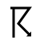 |
セントエルモの火 | 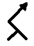 |
| 雷電（雷光） | 極光（オーロラ） | ||
| 雷鳴 | 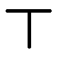 |
大気電気象の観測(Section 3.3.5)
雷電の記録には、その種類、強度、閃光の頻度、および放電が観測された方位角の範囲に関する情報を含めるべきである。雷電（雷光）と雷鳴の間の時間も記録されるべきである。雷電と、雲やもやに反射したその光とを区別するように注意を払うべきである。セントエルモの火の場合、その現象が雲中、降水中、あるいは晴天の大気中などのどこに現れたかを明記すべきである。例外的な極光については、可能であれば写真、タイムラプス画像、または動画を添えて詳細に記述すべきである。
雷雨(Section 3.2.4.1)
定義: 雷雨: 光の閃光（雷電）と鋭い音または轟音（雷鳴）によって現れる、1回または複数回の突然の放電。
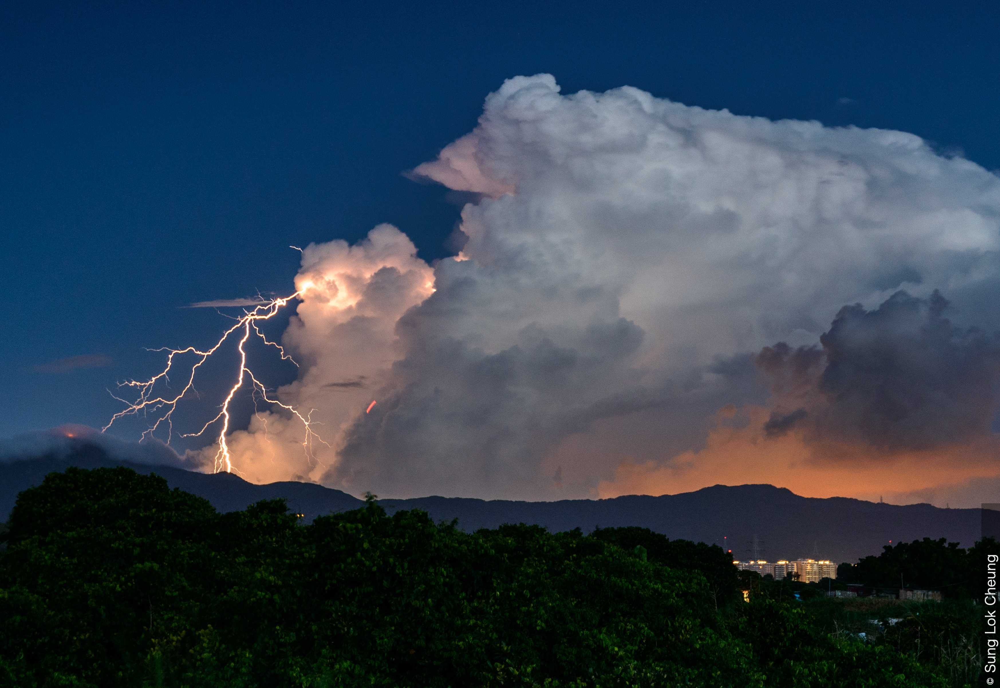
雷雨
南シナ海北部における熱帯低気圧が発達し、ミリネという名のトロピカルストーム（熱帯暴風雨）となった。香港（中国）では、日中は晴れ間があり暑い天候であったが、局地的に突風を伴うにわか雨（しゅう雨）と雷雨もいくつか見られた。
雷雨は積乱雲に関連しており、多くの場合降水を伴う。この写真は、積乱雲 無毛雲による夕方の雷雨を示している。雷雨は、光の閃光（雷電）と鋭い音または轟音（雷鳴）によって現れる、1回または複数回の突然の放電として定義される。
雷雨は積乱雲に関連しており、ほとんどの場合、地上に達したときに雨、雪、雪霰（氷霰）、凍雨、または雹のにわか降り（しゅう雨性降水）の形態をとる降水を伴う。
雷電（雷光）(Section 3.2.4.1.1)
定義: 雷電: 雲から、雲の内部で、またはそれほど頻繁ではないが地上の高い構造物や山から発生する、突然の放電に伴う発光現象。

雷電（雷光）
この写真は、米国ネブラスカ州リンカーン上空の強い中層の雷雨のかなとこを通って枝分かれする雷電を示している。これらの雲放電は、口語で「アンビルクローラー」として知られている。
画像の右側には、雨を伴わない上昇気流の雲底が見える。他の場所では、雲の詳細は強い降水によって遮られている。降水の柱が、雨を伴わない上昇気流の雲底の近くに見られる。
雷電には大きく分けて3つの種類がある。さらに、発光を伴う電気現象には他の形態もある。また、噴火中の火山灰プルームに関連して雷電が観測されることがある点にも留意されたい。
雷電：対地放電（落雷）(Section 3.2.4.1.1)
一般に「サンダーボルト」または「雲対地雷（落雷）」と呼ばれるこの種の雷電は、雲と地面の間で発生する。これは通常、曲がりくねった経路をたどるように見え、一般にはっきりとした主経路（線状雷光、枝分かれ雷光、またはリボン状雷光）から下方に枝分かれしている。
対地放電は通常、下向きに移動する負に帯電した「ステップトリーダー（階梯先行放電）」が、上向きに伸びる正電荷のストリーマ（先行放電）と接続したときに開始される。この導電性の経路が確立されると、大規模な放電が続く。これが「帰還雷撃（リターンストローク）」であり、雷放電の中で最も明るく目立つ部分である。雲対地雷の閃光の大部分は複数の雷撃で構成されており、それによってちらつきやストロボ光の効果が生じる。
上向きに移動するストリーマによって開始されるものよりもはるかに稀ではあるが、下向きに移動する正に帯電したストリーマによって雲対地雷が開始されることもある。これは通常、雷雲の底部ではなく、高い位置から発生する。正の雲対地放電は、他の雷電に比べて非常に明るいのが通常である。また、いわゆる「青天の霹靂（晴天雷またはかなとこ雷）」として、水平方向に何キロメートルも移動して地面に落雷することもある。
上向きに移動するリーダーによって開始される地対雲放電は、時として高い塔や超高層ビルなどの地上の物体から発生することがある。

雷電：対地放電（落雷）
この写真は、米国アイオワ州上空の比較的雲底の高い夕方の雷雨からの雲対地雷（落雷）を示している。
雷電：雲放電(Section 3.2.4.1.1)
空を光のシートで照らすことから一般に「シートライトニング（幕電）」と呼ばれるこの種の雷電は、雷雲の内部（雲内雷）またはある雲から別の雲へ（雲間雷または雲対雲雷）発生する。これは通常、はっきりとした経路が見えないまま、拡散した照明効果を作り出す。この種の雷電には、地平線に見える遠くの雷雨からの拡散した閃光で構成される、いわゆる熱雷（ヒートライトニング）が含まれる。時折、かなとこ雲の下や内部で発生した雷放電が水平方向に距離を移動し、木のように複数の枝分かれを生み出すのが見られることがある。これらは「アンビルクローラー」として知られている。

雷電：雲放電
この写真は、米国ネブラスカ州上空の夕方の雷雨の最中における、1と2の部分の雷の雲放電を示している。雷雨は比較的雲底が高く、嵐の広大なかなとこ雲の一部が見える遠くに乳房雲が見える。右下には小さな上昇気流の雲底が見え、積雲系の雲が嵐へと成長している。嵐の直下には積雲 断片雲が確認でき、遠くには他の積雲の種がある。
雷電：気中放電(Section 3.2.4.1.1)
「線状雷光」と呼ばれることもあるこの種の雷電は、雷雲から空中に向かって通過し、地面には達しない曲がりくねった放電として発生する。放電はしばしば枝分かれするが、明確な主経路を伴う。多くの場合、長い準水平部分を含む。
その他の発光を伴う電気放電の形態には、以下のものがある。
雷電：高高度発光現象（TLEs）(Section 3.2.4.1.1)
大規模な雷雨の上空の大気上層部に形成される、短寿命の発光電気現象。
巨大な雷雲は、大気中の高い場所で電気現象を引き起こす能力がある。これらは肉眼で見られることは稀であり、主に高感度の写真機材で観測され、また光が弱いため夜間にのみ観測される。高高度発光現象（TLEs）には、スプライト、ジェット、およびエルブス（ELVES）が含まれる。
雷電：TLEs：スプライト(Section 3.2.4.1.1)
これらは、大規模な雷雨システムの上空、約50～90 kmの高層大気中で発生する大規模な放電である。それらは通常、強力な正の雲対地雷と同時に発生する。大規模であるが弱い閃光として現れ、通常は赤色である。スプライトの持続時間は数秒以下である。人間の肉眼で見られることは稀であり、夜間に遠くの大規模な雷雨の上空でのみ見られる。
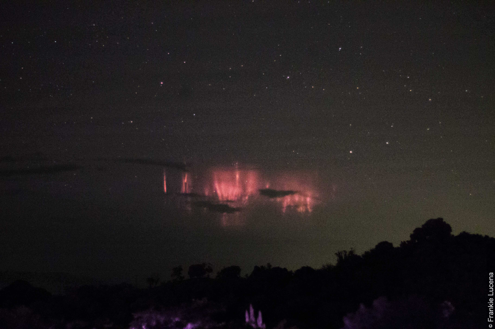
スプライト
スプライトは、大規模な雷雨システムの上空に現れる、高層大気中の大規模ではあるが短寿命で弱い発光放電である。閃光は主に赤色を帯びて見える。この画像は、嵐のシステムから600 km以上離れたプエルトリコから観測された、カリブ海上のハリケーン・マシューの上空のスプライトを示している。
スプライトは、そのかすかさ（中程度に明るいオーロラに匹敵する）と非常に短い持続時間（通常最大10ミリ秒）のため、人間の肉眼で見られることは稀である。観測者は完全に暗闇に目を慣らし、暗い空の下で遠くの大規模な雷雨の上空を見晴らせる明確な視界を確保する必要がある。
暗い空を横切って写真に見える水平の筋は、ハリケーンから発せられた重力波である。
雷電：TLEs：ジェット(Section 3.2.4.1.1)
これらには、ブルージェット、ブルースターター、および巨大ジェット（ギガンティックジェット）が含まれる。ブルージェットは、雷雲の頂部から現れて約40～50 kmまで上昇する、狭い円錐形の青色のフレアである。ブルージェットの持続時間はほんのわずかであるが、航空機のパイロットによって目撃されている。ブルースターターはブルージェットよりもかすかで短く、高度約20 kmに達する。巨大ジェットは約70 kmまで写真に捉えられている。

巨大ジェット（ギガンティックジェット）
ジェットは、大規模な雷雨の上空の大気上層部に形成される、短寿命の発光放電の一種である。これらには、ブルージェット、ブルースターター、および巨大ジェットが含まれる。
この画像は、およそ45 km離れていると推定される雷雲の上空に現れた巨大ジェットをプエルトリコから見たものである。巨大ジェットは積乱雲の頂部から電離層の下部領域へと急速に上方へ発射された。その出現は、雲頂から現れた明るい放電経路を伴い、それが青色の柱へと移行し、頂部で赤色になり断片化した。巨大ジェットの右側には、オーバーシュート（限界突破）した積乱雲の頂部が見える。
雷電：TLEs：エルブス（ELVES）(Section 3.2.4.1.1)
エルブス（電磁パルス源による発光と超低周波擾乱）は、高感度の低照度ビデオにおいて、直径約400 kmに及ぶ、薄暗く平坦で拡大する輝きとして現れ、持続時間は通常0.001秒未満である。
雷電：球電(Section 3.2.4.1.1)
対地放電の直後に、発光する球体が観測されることが時折ある。この球体は、直径が一般に10 cmから20 cmの間であると報告されているが、時には100 cmに達するとも言われており、球電として知られている。これは空中または地上をゆっくりと移動し、通常は激しい爆発を伴って消失する。
雷鳴(Section 3.2.4.1.2)
定義: 雷鳴: 雷電（雷光）に伴う鋭い音または轟音。
わずかな距離が離れている場所では、雷鳴は短く、鋭く、激しい。対地雷撃が非常に近い場合、鋭い最後の破裂音の前に、紙を引き裂くような短い音がし、それに続いて「ヴィッ」という2番目の音が聞こえることがよくある。遠くの放電の場合、雷鳴は鈍い地響きとして、あるいは強さが変化する長く続く鳴り響きとして聞こえる。山岳地帯や都市部を除いて、雷鳴の鳴り響く持続時間が30～40秒を超えることは稀である。
光の速度と音の速度の違いにより、雷鳴が聞こえる前に雷電が見える。雷の放電場所と観測者との距離が離れるにつれて、その時間間隔は長くなる。距離が20 kmを超えると、通常、雷鳴は聞こえない。放電がはるかに短い距離で発生した場合でも、雷鳴が聞こえないことが時折ある。これは、大気の下層における音波の屈折によるものである。
セントエルモの火(Section 3.2.4.2)
定義: セントエルモの火: 地表の高くそびえる物体（例えば、避雷針、風向計、船のマスト）や飛行中の航空機（例えば、翼端）から発せられる、大気中の弱度または中等度のほぼ連続した発光放電。

セントエルモの火
セントエルモの火は、強い電場にある尖った物体から発せられる、大気中のほぼ連続した発光放電である。マスト、尖塔、避雷針、煙突などの高い物体、あるいは飛行中の航空機から現れる明るい青色や紫色の輝きとして、夜間に見られることがある。
この画像では、ボーイング737型機の前部窓越しに、光る閃光が撮影された。乗客は時折、翼端でこの現象に気づくことがある。
極光（オーロラ）(Section 3.2.4.3)
定義: 極光（オーロラ）: 弧、帯、ひだ、またはカーテンの形で高層大気に現れる発光現象。

極光（オーロラ）
オーロラは、地球の磁場によって導かれた電荷を帯びた太陽粒子が高層大気の希薄なガスに作用することによる、目に見える発光現象である。
オーロラは、磁極を取り巻く弧、すなわち「オーロラオーバル」で最も頻繁に観測される。しかし、太陽からのコロナ質量放出や太陽フレアは、地球に到達する太陽風を一時的に増強させることがある。このような事象の最中は、オーロラオーバルが一時的に拡大し、より低い緯度からオーロラが見えるようになる。
北半球では、オーロラは「オーロラ・ボレアリス（aurora borealis）」または「北極光（northern lights）」として知られている。南半球では、「オーロラ・オーストラリス（aurora australis）」または「南極光（southern lights）」と呼ばれる。アイスランドからのこの写真は、オーロラ・ボレアリスを示している。
オーロラの色は、光を放出する特定の大気ガス、ガスの電気的状態、および太陽粒子のエネルギーに依存する。最も明るく最も一般的なオーロラの光は、緑色または黄緑色の色合いを帯びた白色であり、地上約100,000 m（100 km）の原子状酸素によって放出される。高度約150,000 m（150 km）では、単一の酸素原子が拡散した赤い輝きを生み出す。弧や帯の下縁に見られるピンクがかった光は、約60,000 m（60 km）という低い位置にある原子状窒素に由来する。分子状窒素は、最も高い層で青紫色の光を放出する。
オーロラの活動は、太陽風と地球の磁場との相互作用の結果である。太陽風は太陽活動の極大期付近で大きくなる傾向があり、これは10〜12年の周期で発生する。太陽周期の上昇局面において、太陽黒点は太陽フレアやコロナ質量放出に関連する太陽の磁気活動の領域を示す。太陽の極大期からの減少の最中、太陽風の速度の増加はしばしばコロナホールと関連しており、これによって荷電粒子が開いた磁力線に沿って脱出することが可能になる。
極光（オーロラ）は、太陽から放出された電荷を帯びた粒子（太陽風）が高層大気の希薄なガスに作用することによるものである。主に電子と陽子である粒子は、地球の磁場によって導かれ、高層大気（熱圏／外気圏）のガスの原子や分子と衝突する。この衝突により、窒素や酸素原子の電子が一時的に高いエネルギー状態、すなわち「励起」状態に飛躍する。通常のエネルギーレベルに戻る際に放出されるエネルギーの一部は、異なる波長の光の光子という形で放出される。極光は、磁極を取り巻く弧、すなわち「オーロラオーバル」で最も頻繁に観測される。
コロナ質量放出や太陽フレアは、地球の磁気圏に到達する太陽風を一時的に増強させ、磁気嵐を引き起こすことがある。このような事象の最中は、オーロラオーバルが一時的に拡大し、より低い緯度からオーロラが見えるようになる。北半球では、オーロラは「オーロラ・ボレアリス（aurora borealis）」または北極光（northern lights）として知られている。南半球では、オーロラは「オーロラ・オーストラリス（aurora australis）」または南極光（southern lights）と呼ばれる。オーロラの光の大部分は高度約90 kmから150 kmの間で発生するが、低い場合は60 kmで、時折高い場合は1,000 km以上で発生することもある。
明るさ(Section 3.2.4.3.1)
極光の輝度（明るさ）は非常に変動しやすい。それはかすかでかろうじて見える程度であることもあれば、満月に照らされた雲の明るさに匹敵することもあり、時折それをはるかに上回ることもある。明るさは、以下の尺度を用いて推定できる。
- かすか、または弱い。かろうじて見え、天の川と同程度の明るさで、色は最小限である
- 月明かりに照らされた巻雲と同程度の明るさで、わずかに緑色を帯びていることがある
- 月明かりに照らされた低い高度の雲と同程度の明るさで、はっきりとした色がある
- 強い。本を読むことができ、影ができるほど明るい
色(Section 3.2.4.3.2)
極光の色は、光を放出する特定の大気ガス、その電気的状態、および太陽粒子のエネルギーに依存する。最も明るく最も一般的なオーロラの光は、緑色または黄緑色の色合いを帯びた白色であり、地上約100 kmの原子状酸素によって放出される。高度約150 kmでは、単一の酸素原子が拡散した赤い輝きを生み出す。弧や帯の下縁に見られるピンクがかった光は、約60 kmという低い位置にある原子状窒素に由来する。分子状窒素は、最も高い層で青紫色の光を放出する。

オーロラ・オーストラリス（南極光）
オーロラは、地球の磁場によって導かれた電荷を帯びた太陽粒子が高層大気の希薄なガスに作用することによる、目に見える発光現象である。
オーロラは、磁極を取り巻く弧、すなわち「オーロラオーバル」で最も頻繁に観測される。北半球では、オーロラは「オーロラ・ボレアリス」、または「北極光」として知られている。南半球では、オーロラは「オーロラ・オーストラリス」、または「南極光」と呼ばれる。オーストラリアからのこの写真は、オーロラ・オーストラリスを示している。
オーロラの色は、光を放出する特定の大気ガス、ガスの電気的状態、および太陽粒子のエネルギーに依存する。最も明るく最も一般的なオーロラの光は、緑色または黄緑色の色合いを帯びた白色であり、地上約100 kmの原子状酸素によって放出される。高度約150 kmでは、単一の酸素原子が拡散した赤い輝きを生み出す。弧や帯の下縁に見られるピンクがかった光は、約60 kmという低い位置にある原子状窒素に由来する。分子状窒素は、最も高い層で青紫色の光を放出する。
形態(Section 3.2.4.3.3)
極光はいくつかの明確な形態と構造を示す。これらは次のように分類できる。
- 発光（グロー）: 地平線に沿った夜明けのような輝き
- 均一なパッチ: 明確な境界がなく、特定の形を持たない拡散したオーロラ光のパッチ
- ベール: 空の大部分を覆う、全体的なオーロラ光。ただし、構造はほとんどない
- 均一な弧（アーク）: 垂直の光線構造を持たず、光の均一な曲線のアーチとして空を横切って広がる弧。上縁よりも下縁の方が比較的はっきりと定義されている
- 均一な帯（バンド）: 弧の規則的な形を持たず、垂直の光線構造もない、空を横切る帯。すなわち、ねじれた弧。下縁は弧の下縁よりも不規則で、はっきりとは定義されていない
- 光線（レイ）: 空に向かって上方に伸びるサーチライトの光線のような、垂直なオーロラ光の光線またはシャフト。単独で、散在して、または束になって発生することがある
- 光線を伴う弧（レイドアーク）: 垂直の光線構造を持つ弧。通常、小さな動きや不規則な明るさの変化という中程度の活動を示す
- 光線を伴う帯（レイドバンド）: 垂直の光線構造を持つ帯。光線が長い場合、よじれやひだを示し、空で揺れるカーテンやドレープに似ていることがある。強力なディスプレイでは、複数の帯が存在することがある
- コロナ: 頭上の光線やその他の形態が一点に収束し、オーロラの冠（クラウン）またはコロナを形成したもの
静穏(Section 3.2.4.3.4)
ディスプレイの間に形態や明るさの変化がほとんどない場合、オーロラは「静穏（quiet）」であると言われる。しかし、オーロラのどの形態も、暗くなったり明るくなったり、あるいは消失と再出現をリズミカルに繰り返すことで示される「脈動（pulsating）」の状態になることがある。オーロラがわずかではあるが不規則で急速な変化を示すとき、それは「フリッカリング（flickering：ちらつき）」である。光の波が急速に上方に移動し、既存の形態を照らし出すとき、オーロラは「フレーミング（flaming：燃え上がり）」である。帯に沿って水平に波打つより明るい領域など、不規則な水平方向の変動を示すとき、オーロラは「ストリーミング（streaming：流動）」である。